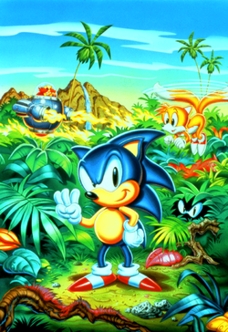

Sonic The Hedgehog 3
 De: La Frikipedia, la enciclopedia extremadamente seria.
De: La Frikipedia, la enciclopedia extremadamente seria.
De la serie Videojuegos:
Sonic The Hedgehog 3

Carátula original del Sonic 3 exclusiva de Japón. Seguro tu tienes otra distinta porque eres Gaijin.
| Desarrollado por:
|
SEEE-GAAA!
|
| Distribuido por:
|
Un camion y una fragoneta
|
| Diseñado por:
|
Tacasi Iuda (Takashi Yuda), Irocasu Llasujara (Hirokazu Yasuhara), y el famoso Lluji Naca (Yuji Naka)
|
| Motor
|
Espacial
|
| Género(s)
|
Erizo, con zorro de mascota incluído.
|
| Fecha de lanzamiento:
|
Los robots de Eggman lanzan toda clase de misiles
|
| Modos de juego:
|
manual
|
| Requisitos:
|
saber jugar
|
| Disponible en:
|
Sega Mega Drive, pero también Dreamcast, PC, y cualquier plataforma que pueda emularlo.
|
| Formatos:
|
jpg y gif
|
| Edades:
|
Clasificado E para todos.
|
| Puntuaciones:
|
.,;¡!¿?
|
Sonic The Hedgehog 3 es el tercer videojuego de la saga de Sonic The Hedgehog (chocolate por la noticia) y fue lanzado como secuela de continuidad de su predecesor Sonic The Hedgehog 2 (otra obviedad). Fue lanzado desde Cabo Cañaveral en Febrero de 1994 despues de todo un año 1993 sin que SEGA lanzara juegos de Sonic porque se dedicó a vaguear después de su Sonic 2 de 1992. Obviamente la plataforma para la que estuvo disponible fue la Sega Genesis, pero como sabemos se puede jugar estos juegos en el PC y en casi cualquier otra consola que tenga un emulador, así te evitas el tener que comprar ese anticuado cartucho y te sale mas barato descargar el ROM gratis desde el internet.
Argumento del juego
Sonic The Hedgehog 3 comienza exactamente donde había quedado Sonic The Hedgehog 2. Al final del Sonic 2, el "Huevón de la Muerte" del Doctor Robotnik fue destruido por Sonic con la ayuda de el jugador que controla el JoyStick "Tails". Luego de la explosión del Huevo de la Muerte veíamos un ending cursi donde Tails recoge a Sonic con su avión Tornado y luego de la musiquita del ending vemos que Sonic se transforma en Super Sonic para posar frente a la pantalla mientras vuela en el cielo diurno junto al avión de Tails. El Sonic 3 comienza suiguiendo ese hilo, y vemos una intro donde viene Tails volando con el Tornado y lleva a Sonic, que se transforma en Super Sonic y llega hasta una isla, en la cual es bien recibido por un equidna rojo que sale de la nada y le raja la cara para robarle las siete Esmeraldas Chaos a Sonic. Resulta que el Death Egg se estrelló en esta isla, llamada Angel Island donde este personaje nuevo al que llamaron Knuckles vivía tranquilamente en soledad hasta que el Death Egg del Dr. Robotnik cayó en su desdichada isla, y ahora Eggman convenció a Knuckles El Equidna para que se deshaga de Sonic & Tails y le consiga las Chaos Emeralds a Robotnik, para que pueda volver a poner en funcionamiento su Death Egg y marcharse de esa mugrosa isla, y así el equidna ermitaño volverá a estar solo y tranquilo sin que le rompan las bolas.
Ahora Eggman tiene a este nuevo aliado, Knuckles, así que por supuesto, Sonic y Tails deberán detenerlos a ambos, tomando las Esmeraldas del Caos en su camino antes de que Robotnik lo haga, o de lo contrario Eggman se saldrá con la suya, dominará al mundo, matará a Sonic y Tails, Knuckles se suicidará cometiendo seppuku por la deshonra de haber sido engañado por Eggman, y los niñatos llorarán como maricas porque el juego no tendrá final feliz; así que para evitar todo eso será mejor que Sonic y Tails derroten a Robotnik y a su lacayo Knuckles.
Desarrollo y sistema de juego
Es otro juego de plataformas donde Sonic y Tails corren como condenados de lado a lado de la pantalla juntando anillos y destruyendo Badniks, aunque ahora hay algunas nuevas novedades (como que si son "novedades" obviamente son "nuevas", ¿o no?):
Personajes
- Sonic The Hedgehog: También conocido como "la cosa mas rápida del mundo" (debe tener eyaculación precoz), es un erizo supersónico que puede correr a la velocidad del sonido, y seguro eso ya lo sabías porque ya jugaste sus dos juegos anteriores así que no se por qué mierda te lo estoy diciendo, que eso no es ninguna novedad. Lo que sí es novedad en éste juego es que Sonic tiene nuevas habilidades, mas bien una nueva habilidad llamada Flash Attack o Insta-Shield; que es un escudo temporal que dura aproximadamente 1,2 segundos y te protege de un golpe al mismo tiempo que mata al badnik al que atacas en vez de que el badnik te mate a tí. Este escudo de escasa duración es como un destello cutre que dura poco mas de un segundo y es de color blanco, por lo que suponemos que Sonic lo hace con un salpicón de lefa que se hecha mientras da su giro rápido durante el ataque en salto (entonces eso de "la cosa mas rápida del mundo" si era por lo de la eyaculación precoz; ahora sí está confirmado!).
- Pluto de Sonny de Cher, como el Robin de Batman (con todo lo que eso implica). A Tails seguro ya lo conoces del juego anterior, el famoso Sonic 2, donde Tails debutó con Sonic (como compañero de escenario... no vayas a pensar otra cosa), así que demás está decir que es un zorro de dos colas que las usa para
espantarse las moscas volar; lo que si es una novedad en Sonic 3 es que ahora Tails no solo vuela cuando lo usa el CPU como sucedía antes que en Sonic 2 te cagaba y el jugador nunca podía hacer volar a Tails... ¡Ahora tu también puedes!, nomás presiona el botón de salto cuando Tails ya esté en el aire por haber saltado antes (o sea, doble salto), y estarás volando; pero hay que darle "Tap!, Tap!, Tap!" constantemente o si no se cae... y si vuelas mas de 30 segundos se cansa y también se cae... y puedes llevar a Sonic volando pero si juegas solo vas a tener que usar 2 joysticks al mismo tiempo... y debajo del agua no puedes llevar a Sonic porque las puas mojadas son muy pesadas... en fin, el chico tiene sus limitaciones, pero convengamos que ya es bastante mucho que un zorrito de 8 años que no pesa ni 10 Kg levante por el aire a un erizo de 15 años que pesa 40 Kg, así que algo de crédito se merece.
- equidna nativo de Angel Island; es de color rojo, aunque los lammers de los programadores lo hicieron fucsia por deficiencia de la paleta de colores; y es el Guardián de la Master Emerald, una esmeralda gigante de la cual no te podemos decir nada mas porque revelaríamos la trama del siguiente juego (pero si lees el artículo de Knuckles igual te vas a enterar). Knuckles ataca a Sonic y Tails porque ellos son intrusos que se metieron en su isla sin presentar pasaporte y visa en la aduana, aunque Eggman ya había entrado de intruso antes que éstos dos pero por alguna razón Knuckles no atacó a Eggman (suponemos que el doctor habrá sobornado al equidna con canutos de marihuana y revistas pornográficas de asiáticas pechugonas). Knuckles se llevó la desagradable sorpresa de que Robotnik se estrelló con su Death Egg en Angel Island, y al equidna no le agradan las visitas porque es tan sociable como Sheldon Cooper y Gregory House fusionados, pero para sacarse ese gran peso de encima (y me estoy refiriendo a Eggman, no solo al Death Egg) hizo un trato con el doc. y prometió ayudarlo a conseguir las 7 Chaos Emeralds para que Robotnik las use en su nave espacial y se vaya a la mierda de una buena vez. Como Sonic & Tails arribaron a la isla entonces Eggman le dijo a Knux que estos pendejos eran malos así que Knuckles puso trampas en la isla y se aparece de a ratos para joderle las bolas a Sonic y a Tails, como para entorpecerles el paso y no permitir que sigan de jarana por Angel Island sin pagar la tarifa mínima de la excursión por el Safari.

- Mobius (con Angel Island incluída, obvio).
Enemigos
Los enemigos de Sonic y Tails son los que todos ya conocemos: el collar antipulgas y el veterinario, los Badniks, que son esos robots que funcionan gracias al movimiento de animales atrapados en su interior, los cuales han sido capturados por el Doctor Robotnik a pesar de los miles de reclamos y demandas que Greenpeace a presentado en su contra. La novedad es que a partir del Sonic 3 ya no pasas tranquilamente del primer acto de cada zona cruzando ese cartelito con la cara de Sonic, sino que ahora ¡al cartelito tienes que ganártelo!. Así es mhijo, has crecido y ya es hora de que vayas a trabajar: el cartel de final de Act 1 ya no viene gratis, tienes que vencer a un Commanchbot para ganartelo y pasar de fase. Estos tíos que mencioné son unos robots mas poderosos que los badniks, así que no tienen una mierda de animalillo dentro y no puedes romperlos de un solo golpe: tienes que pegarles seis veces como si se tratara del propio Eggman, aunque claro que Eggman necesita ocho golpes y escapa cuando lo derrotas y en cambio estos robots mas bien se hacen mierda y explotan en mil pedazos, pero conste que sí son mas grandes y mas fuertes que los badniks, y hasta tienen armas casi tan grosas como las de Eggman, como lanzallamas, lanzamisiles, lanzadiscos, y lanzan casi todo... hasta erizos azules y zorros de dos colas (Muahahaha Risa diabólica del Dr. Eggman).
Ítems, Barreras, y demás porquerías
Sonic y Tails siempre encuentran en cada zona una serie de elementos que puede aydarle en su paso por el juego, pero ahora como se dijo hay novedades y los objetos del inventario también han empeorado mejorado considerablemente, así que además de los clásicos anillos y los postes de estrellas ahora también hay cambios en los otros ítems del juego, principalmente éstos:
- Warp Rings: Son los anillos gigantes que antaño en Sonic 1 aparecían para ir al Special Stage. Ahora están de vuelta pero ocultos en todos los actos en unas cuevas escondidas en cualquier parte del nivel, contrario al Sonic 1 donde nomás aparecía un solo anillo gigante al final del acto y solo si tenías 50 de los anillos convencionales o más. Estos Anillos Gigantes siguen sirviendo para ir al Special Stage a coger una Esmeralda del Caos, cosa que antes en el Sonic 2 se usaban los cehckpoints con el poste de estrellas para ir a los Special Stage, pero ahora que reinsertaron el Anillo Gigante los checkpoints con la estrella socialista sirven para ir a una fase de bonus que antes ni existía. Cuando consigues las 7 Esmeraldas del Caos, los anillos gigantes siguen apareciendo, pero al cogerlos no vas al Special Stage sino que obtienes 50 anillos para que te transformes en Super Sonic. Todo sea por encontentar a los fans^^.
- Monitores de Video: Vuelven como siempre para darte
películas condicionadas ítems y power-ups del tipo 10 Anillos, velocidad sónica, vidas extra, etc; pero ahora lo mejor es que sacaron ese escudo azul de mierda que no servía para nada y lo reemplazaron por tres tipos de escudos diferentes con poderes elementales: el Escudo de Fuego (Flame Barrier) te hace inmune al fuego, te permite caminar sobre la lava (Oops!, que ya estoy haciendo revelaciones sobre el siguiente juego!) y además Sonic lo puede usar para hacer un ataque en salto estilo bola de fuego, pero Tails ya puede volar así que el ataque con el escudo no lo puede hacer y en esa como que lo cagaron. Este escudo desaparece al contacto con el agua, pero para eso tienes el Escudo de Agua (Aqua Barrier) que es una burbuja que te permite respirar bajo el agua pa' que no tengas que andar buscando esos burbujeros para tragar oxígeno antes de que la cuenta regresiva llegue a 0 y el erizo se ponga mas azul que de costumbre... Sonic puede usar esta barrera de burbuja para rebotar sobre sus enemigos como si fuera bola de basketball de Michael Jordan, pero Tails no puede porque bajo el agua puede nadar, y obviamente Yuji Naka no iba a darle a Tails dos habilidades al mismo tiempo (para no dejar en vergüenza a Sonic). La otra barrera es un Escudo Eléctrico (Thunder Barrier) que atrae magnéticamente todos los anillos que estén cerca del personaje y además Sonic puede usarlo para hacer un ataque en salto que le permite saltar mas alto al lanzar chispazos, pero ¿adivina que? ¡a Tails lo cagaron y tampoco le dejan hacer ese ataque eléctrico!... Bah, que importa!, al cabo que total el escudo eléctrico es igual que el de fuego y desaparece cuando toca el agua, y al menos en el agua Tails si es mejor que Sonic, porque el erizo se la dará de dandy superveloz pero no sabe nadar!!!.
NOTA: Los monitores de Ítems también tienen unos de Robotnik que equivalen a un golpe, o sea que si tienes un escudo y tocas este monitor perderás el escudo; si no tenías escudo pierdes los anillos, y si no tenías anillos pues TE MUERES!. Solo algunos estúpidos gustan de experimentar tocando estos monitores a propósito aún sabiendo que son maléficos, pero para mayor seguridad tócalos solo si antes tocaste el monitor de la Barrera de Estrellas que te hace Invencible porque solo así no recibirás daño (pero recuerda que el efecto de la invencibilidad es como el efecto de la píldora del viagra; se pasa rápido).
Niveles, Fases, Zonas, o como mierda se diga
Fases de acción
Hay seis zonas (niveles) divididos en dos actos cada uno. Al final de cada primer acto debes vencer a un androide Commanchbot y al final del segundo acto debes vencer al Dr. Robotnik, así que nunca te dan un respiro. Cada primer acto se conecta directamente con el segundo, conservando cualquier escudo que el jugador pudiera tener, contrario al juego anterior donde pasabas tranquilamente el cartelito del primer acto sin pelear con nadie pero el segundo lo empezabas sin el escudo; ahora te joden que debes pelear con un robot pero como recompensa si sobrevives te quedas con el escudo que tenías (y como el cartel de Sonic cae desde el cielo puedes darle ostias hasta que pinche en lugares secretos del suelo donde pueden desenterrarse otros escudos, anillos, y de esos monitores de mierda). Después de cada batalla con Robotnik en el Acto 2, se muestra una pequeña animación que da la impresión de continuidad entre zonas (por ejemplo al final de Angel Island, donde los personajes caen por una cascada y llegan al segundo nivel, Hidrocity, que empiezan cayendo por la misma cascada). Esto muestra una viva figura del mundo de Sonic 3, contrastando con la lista arbitraria de zonas en los anteriores juegos de Sonic, las cuales, en su mayoría, no se relacionaban un carajo con sus zonas siguientes y antecesoras en el juego porque Yuji Naka y los suyos nomás se coparon diseñando niveles pero no se ocuparon una mierda sobre como hacerlos encajar coherentemente en una trama argumental comprensible; pero ahora como vemos eso lo arreglaron, y aunque el juego tiene menos niveles que su precuela, al menos ahora están mas bien hechos y quedan mejor, así que vamos a conocerlos:
 Mientras Sonic está posando para la foto y Tails olfatea las hojas de marihuana, Robotnik quema toda la isla y Knuckles acecha a Sonic desde su escondite entre las hojas para darle por atrás sorpresivamente y violarlo a traición por la espalda.
- Angel Island Zone: (La Zona de la Isla del Angel). Es la primera fase del juego y la isla natal de Knuckles El Equidna. Originalmente era una Isla Flotante que flotaba en el cielo (valga la redundancia) por el poder de una octava Chaos Emerald conocida como la Master Emerald, de la cual Knuckles es el Guardián y como se dijo antes no se pueden revelar mas datos al respecto porque eso ya es parte del argumento del siguiente juego (LOL^^). En esta isla cayó el Death Egg del Dr. Robotnik, y por esas casualidades de la vida justo después del accidente del Death Egg la isla dejó de flotar en el cielo y cayó al océnao, lo que implica que a la Master Emerald de Knuckles seguramente se la robó alguien con malas intenciones. Sonic llega a la isla cuando ya está en el océano. El paisaje es tropical-paradisíaco, con verdes hierbas, abundante vegetación exótica (como las bailarinas que a mí me gustan), troncos flotantes, arbolado bello (como yo), palmeras, muros rocosos y áreas inundadas por agua. En el fondo podemos observar un vistoso paraje oceánico en el paraíso. Los Badniks de ésta zona tienen forma de pequeños rinocerontes embestidores (no confundir con "desvestidores"), monos arborícolas lanzadores de
jabalinas cocos, y flores mecánicas punzantes lanzadoras de bolas espinosas. Al final del acto 1 los protagonistas se enfrentan a un robot volador lanzallamas, que viene acompañado por un regimiento de copias baratas que igualmente son todos piromaníacos y queman todo para invadir la isla, logrando incendiar toda la región de Angel Island al completo, haciendo que el acto 2 transcurra en un desolador paisaje Incendiado e Incandescente, con un gran devastador Anillo Ígneo cubriendo la zona como fondo. Al final del acto 2, el Dr. Robotnik bombardeará la Isla mediante una aeronave bombardera a fin de destruir a Sonic. Finalmente, Robotnik aparece en su Egg-o-Matic tras una enorme verga cascada como fondo, equipado con un sofisticado sistema lanzallamas y lanzador de bolas de fuego que va ocultándose tras el caudal de dicha catarata. Al derrotar a Robotnik, aparece Knuckles activando un interruptor que destruye el puente donde se encuentran los protagonistas y les hace caer hasta la segunda zona, Hidrocity. Por lo general se puede decir que Angel Island recuerda mucho a Vietnam, con toda esa selva espeza llena de pastizales y que luego es incendiada por las tropas invasoras de los tecnócratas neoliberales, representados aquí por Eggman; y el comunista nativo de esta isla es Knuckles, que al igual que los Vietcongs se vale solo de trampas rudimentarias y tácticas de guerra de guerrillas para defender su territorio, mientras que los foráneos y extranjeros invasores van como Pedro por su casa arrasando con todo a su paso y con artilugios mas avanzados que los que tiene Knuckles.
- Hydrocity Zone: (La Zona de la Hidro-ciudad) Sumergida en las profundidades de Emerald Ocean se encuentra la ciudad perdida de Hydrocity. Se trata de una región totalmente inundada perteneciente a una civilización ancestral que ya pasó a la zoología (por eso creen que los erizos son azules y los equidnas son rojos). Otros badniks son robots-piraña que "comen" los anillos (Rings) de los protagonistas y cuesta un huevo sacártelos de encima y para colmo te muerden las bolas mientras estás bajo el agua y no te dejan moverte bien y te hacen perder tiempo que te impide llegar a tragar las burbujas de oxígeno y te terminas ahogando. También hay badniks insectos, unos que son como moscas que han copiado de Aquatic Ruin Zone del Sonic The Hedgehog 2, y otros bichos que se mueven por el suelo y te lanzan misiles. El enemigo del final del primer acto es un robot esférico similar a Eggrobo, que se mueve de lado a lado, y se posiciona en el centro de un pilar giratorio que provoca un remolino en el agua, el cual impide que los protagonistas se muevan y te rompe bastante las pelotas. En el Acto 2 reaparece Knuckles y hace volar otro puente al mejor estilo de Sendero Luminoso para que te caigas a un ducto que conduce directo a Robotnik. El Dr. Robotnik equipa al Egg-o-Matic con una hélice que genera un potente remolino en el agua, el cual atrae a los personajes hacia el centro del rotor para que la hélice te descuartice en mil pedazos (sí, así de sangrientos son los juegos que SEGA hace para los niñitos). Además, ésta nave lanza pequeñas bombas que al explotar expulsan fuertes chorros de agua a presión hacia arriba, los cuales Sonic y Tails pueden utilizar para elevarse, y así golpear el vehículo del Dr. Eggman (sí, así de estúpido es Eggman, que fabrica armas que luego Sonic puede usar en su contra). Tras derrotarlo, del suelo emerge un chorro de
semen agua que propulsa a los personajes hasta la siguiente zona, Marble Garden. Tails a punto de estrellarse con el saltamontes robótico.
- Marble Garden Zone: (La Zona del Jardín de Mármol) Sonic y Tails caen aquí después de que el chorrazo de
lefa agua los manda a la mierda para arriba, y salen disparados hasta la estratósfera y caen en una selva montañosa y arboleada donde se ocultan unas ruinas que son un plagio de Macchu-Picchu. Estas construcciones se encuentran en medio de una espesa selva y están hechas en su mayoría por bloques de piedra y columnas de colores grisáceos (semejantes al Sonic Team ni se gastaron en colorear la fase que diseñaron. En esta zona hay Badniks camuflados como camas de púas, otros semejantes a saltamontes, y algunos que parecen tener forma de erizo, aunque se mueven flotando en el aire, algo así como una mezcla de Pez Globo. Al final del acto 1 aparece un robot excavador provisto de dos potentes taladros, que seguramente ya lo habrás visto porque venía hinchando las pelotas durante todo el transcurso del primer acto, y ahora si se decidió a atacarte de una buena vez. Cuando este robot taladra el techo, provoca un derrumbe de rocas redondas y puntudas, las redondas no hacen una mierda pero las puntudas te golpean y te hacen perder los anillos, y es que bueno... siempre la puntuda te hace doler, ¿o no?. Durante el transcurso del acto 2, las ruinas que se veían como fondo en el acto 1 se ven más grandes y están rodeadas de arbustos frondosos, como para dar la impresión de que la historia avanza y ya te has recorrido todo ese trecho. Además, el Dr. Robotnik aparece ocasionalmente y excava las rocas con el potente pollón taladro que ha instalado en el Egg-O-Matic, generando así potentes movimientos sísmicos que hacen que la zona se vea modificada geográficamente al paso de Sonic, porque siempre estos chanchos burgueses de las compañías mineras generan alto impacto ambiental en los recursos naturales que perforan para enriquecerse a costa de la devastación y la extinción de especies en peligro, y por eso Sonic debe luchar para impedir que Eggman se enriquezca con la codiciosa industria de la minería que destroza la geografía y el paisaje de Angel Island. Al final de dicho acto Sonic y Tails tienen que enfrentarse al doctor en ese vehículo, aunque previamente él destruye la plataforma del suelo, haciendo que la zona se derrumbe por completo que es lo que siempre consiguen estos empresarios que explotan la megaminería, y por eso como Eggman destruye todo el suelo y ya no queda ni donde pisar, Tails coge a Sonic lanzándose a volar por los cielos. Tails debe sujetar a Sonic y llevarlo volando para poder alcanzar al Dr. Eggman, que ataca con el propio taladro a los protagonistas desde varios ángulos y distancias. Durante este enfrentamiento, Tails puede volar de fomar indefinida, porque si se cansara cada dos segundos como pasa habitualmente entonces perderías a cada rato y tirarías el cartucho a la mierda, y obviamente SEGA no quiere que hagas eso con sus productos. El jugador puede controlar la dirección de vuelo de Tails a la vez que controla el salto de Sonic para atacar a Eggman. Tras acabar el enfrentamiento, Tails sigue volando mientras cae la noche hasta aterrizar en la siguiente zona, Carnival Night. Sonic y Tails saltando en la plataforma impulsada por
culos paspados y muy inflamados (probablemente de mandriles con hemorroides).
- Carnival Night Zone: (La Zona del Carnaval Nocturno). Luego de volar toda la noche Tails lleva a Sonic a
un Las Vegas, o algún barrio prostibulario de Bangkok, pero sin las snowboard en la intro de Ice Cap Zone, algo que Tails no puede hacer :S
- Ice Cap Zone: (La Zona de la Capa de Hielo) Se trata de la región mas fría de la "Isla Flotante". El suelo de este lugar está totalmente congelado y cubierto por nieve o estalagmitas, las paredes presentan diversos cristales de hielo, y los techos tienen centenares de estalactitas, así que no hace falta decir que hace un frío que te cagas, y a pesar de eso Sonic sigue andando desnudo por ahí, así que seguro se le congelan hasta las púas de la raya del culo. En el primer acto, luego de hacer snowboard en la más alta montaña de esta zona, pasas el fondo montañoso nevado y llegas a unas cavernas del interior de la misma montaña, donde hay miles de rampas y resbaladillas superdivertidas cubiertas de hielo y puedes perder por "Time Over" por pasártelas los 10 minutos descendiendo tratando de llegar hasta el final del pozo, al que nunca llegas porque es un agujero interminable. El segundo acto transcurre en el exterior del área cavernosa, a cielo abierto con algunas cavernas donde hay agua helada para que a Sonic se le congelen las bolas todavía mas. Durante este acto, el sol ilumina más la zona de juego y deja de caer nieve. En el fondo se puede observar un mar azul donde hay una serie de llanuras nevadas de esas que en techno que pone a mil a todos los drogadictos enchufados que se dan juergas con pastillas de heroína y a empastillarte con petas mezcladas con vodka. Te lo digo por experiencia.
Knuckles practicando el
Golpe de Una Pulgada de
Bruce Lee contra el Eggmobile de
Eggman Sonic.
- Launch Base Zone: (La Zona de la Base de Lanzamiento) Es el lugar donde el Dr. Robotnik ha elegido montar
a tu hermana una sofisticada base de lanzamiento para reactivar el Death Egg, y hacerlo despegar hacia el espacio exterior. En el primer acto se puede divisar al fondo el Death Egg en reparación. El suelo (que está construido sobre el agua) es amarillo metálico con bordes violáceos, y las estructuras están sostenidas por columnas de acero de color rojo. Esta zona destaca por la cantidad de ascensores móviles, cilindros giratorios, sistemas de seguridad laser, y toda clase de aparatos y "gadgets" tecnológicos que obviamente fueron traídos por el Dr. Eggman, porque antes cuando en Angel Island solo estaba Knuckles no había una mierda de tecnología y lo mas avanzado que se podía encontrar eran esos guantes con dos nudillos picudos que tiene el equidna rojo. Los Badniks de esta base son: robots-caracoles disparadores adheridos a los muros, robots esféricos que lanzan bolas espinosas, similares a los de Ice Cap (porque ni se gastaron en diseñar nuevos modelos), robots-ave que atacan cuando se acciona una alarma, las cuales Sonic puede esquivar pero el metiche de Tails siempre la caga y se mete entre las alarmas haciendolas sonar y entonces vienen esos robots pájaros que lo joden a Sonic justo cuando él se había molestado en ir despacio para no tocar las alarmas, pero el meterete de Tails la cagó. También hay unos badniks similares a búhos, pero color verde, porque como dijimos los muchachos del Sonic Team no saben una mierda de biología y por eso creen que cualquier animal es del color que a ellos se les ocurra. Estos badniks búhos atacan con pesas móviles, a veces desde arriba y otras desde el suelo, y siempre te hacen perder los anillos y resultan mas molestos que Tails!!!... bueno, no exageremos... Al final del primer acto un contenedor se abre dejando salir un robot flotante que utiliza dos brazos móviles para atacar, ya que en el extremo de cada brazo hay un testículo metálico provisto de pendejos metálicos. Al final del segundo acto, el Dr. Robotnik utiliza una máquina que lanza bolas negras a toda velocidad a través de dos puntos diferentes de un mismo muro (alternando entre la parte superior y la inferior, como para que descubras su modus operandi y puedas vencerlo). Una barra móvil separa ambos sectores del muro, y los personajes deben utilizarla para alcanzar la cabina del Dr. Robotnik.
Tras derrotar este artefacto, el juego continúa, Sonic sigue a Robotnik que no sabemos como escapó porque dejó a su Eggmobile ahí estacionado, y Sonic se sube al Eggmobile y lo maneja para cruzar el río porque no sabe nadar, mientras que Tails lo sigue pero no llega a abordar el Eggmobile porque nomás tiene lugar para una sola persona, así que Tails se deprime y se suicida (Aaaay!..., ¡que lástima!, ¡y yo que quería que Tails me siga a todas partes!). Sonic sigue conduciendo muy bien el Eggmobile a pesar de que supuestamente es la primera vez que lo conduce (lo que hace sospechar...) hasta que en medio del agua se topa con una columna de esas de hierro donde está Knuckles, que usa al Eggmobile de Sonic para practicar un poco su Golpe de una Pulgada de Bruce Lee, hasta que un temblor desmorona la columna esa y Knuckles se va a la mierda cayéndose al agua (que se joda por pelotudo). Sonic sigue en su Egg-O-Matic lentamente y muy aburrido como estaba hasta que llega a una plataforma que cuelga de los huevos... ¡ah, perdón!, ¡que cuelga del Huevo de la Muerte! (es que estoy traduciendo desde el inglés y me adelanté un poco... sorry^^). El Huevo de la Muerte ha logrado despegar (¿o por que crees que se produjo ese temblor que hizo caer a Knuckles?). Sonic sale de una buena vez del puto Eggmobile y aborda de polizón la plataforma que cuelga del Death Egg (ahora lo dejo en inglés para evitar equivocaciones), así que Robotnik se cabrea porque Sonic se metió sin que nadie lo invite, y entonces comienza la batalla final. Esta vez el Egg-o-Matic de Robotnik está equipado con una nave-coraza de tres cuerpos de tamaño que posee dos cañones láser giratorios, y además, la cabina del doctor está protegida por una esfera metálica espinosa que circunda a su alrededor, así que se pone muy difícil para Sonic... a menos que ya hayas juntado las 7 Chaos Emeralds y te transformes en Super Sonic, entonces nomas te quedas del lado de Eggman y sin hacer nada ya lo vas golpeando a medida que él va subiendo y así lo haces mierda en 10 segundos. La pelea transcurre mientras el Death Egg gana altitud; Sonic (o en su defecto Tails) debe detener a Robotnik para impedir que su nave espacial llegue al espacio exterior. Luego el Huevo de la Muerte gana mas altura y llega a la estratósfera donde el cielo se va poniendo oscuro, y por esas casualidades de la vida ésto ocurre justo después de que destruyas al vehículo de Eggman, ya sea que tardes ocho minutos o lo hagas en un santiamén, y uno se pregunta ¿por qué no oscureció antes de que derrote a Robotnik?. Como sea, el Death Egg parece que va regulando su velocidad para coincidir a llegar a la altitud oscura al momento exacto en que derrotes a Eggman, y ahí la cosa lejos de terminar todavía sigue: El Egg-O-Matic es equipado con una fuerte coraza provista de púas metálicas en su parte superior para cagarlo a Sonic y que no pueda pegarle en la cabeza a Eggman como acostumbra, y además ahora la nueva arma del Dr. Huevón tiene unos enormes brazos mecánicos con grandes manos que intentan pajear capturar a los protagonistas, que deberán evitarlos si quieren permanecer con vida y anular el vuelo del Death Egg. El único punto débil que tiene este armatoste es la cristalera frontal donde Robotnik maneja el aparato, muy difícil de acertar, pues se trata de un punto muy concreto de la estructura, obviamente pensado para ponerle algo de dificultad a éste Boss, ya que es el Jefe final y si no lo hubieran hecho difícil parecería solo uno mas del montón, porque convengamos que su diseño no es nada impresionante en comparación con el Metal Robotnik del juego anterior. Al derrotar al Jefe Final, la plataforma se desprende del Huevo de la Muerte y desciende para volver a baja altura y que el cielo se ponga otra vez claro para felicidad de los niñatos, y al fondo los protagonistas observan como la nave cae averiada hasta que explota, para que luego Sonic salude a la cámara posando al compás de una muisiquita victoriosa luego de la cual pega un salto y se pone en primer plano para presumir su protagonismo y victoria en otro de sus juegos.
Fases Especiales y de Premio
Al igual que en los dos juegos de Sonic precedentes a Sonic 3, para conseguir las 7 Esmeraldas Chaos debes acceder a unas Etapas Especiales, que son unos minijuegos que desde Sonic 2 vienen en 3D, porque antes en el primer juego de Sonic era una babosada en 2D.
Para acceder a estos Special Stages, se vuelve a recuperar la fórmula del primer Sonic de Megadrive: haces un truco y consigues las 7 esmeraldas sin jugar debes encontrar el Giant Ring (Anillo Gigante), que en vez de estar al final de cada acto, se halla oculto durante los mismos, jodiéndo al jugador que ahora debe explorar las zonas minuciosamente en su búsqueda en vez de solo juntar 50 anillos y esperar hasta llegar a la meta del primer acto. Una vez localizado este anillo gigante, basta con tocarlo para acceder a la Fase Especial que permite obtener las Esmeraldas... bueno, permite obtener las esmeraldas siempre y cuando no seas un baboso que pierde a cada rato y no ganas una mierda, pero si eres tan bueno como éste sujeto entonces seguro consigues las 7 esmeraldas antes de finalizar la segunda zona del juego.
Además ahora lo novedoso es que incluyeron una Fase de Premio, ya que en el juego anterior (Sonic The Hedgehog 2, por si no recuerdas!!!) cuando tocabas tus "partes" los Postes Estelares distribuidos a lo largo de los Actos de cada Zona ibas al Special Stage, pero ahora como al Special Stage vas con los anillos gigantes entonces tocando los cojones los Postes de Estrellas vas a un Bonus Stage, que es un minijuego que la verdad no sirve para una mierda pero puede que ganes anillos, barreras, y porquerías de ésas.
Ahora he aquí la descripción minuciosa de cada una de estas fases alternativas:
Parece que mientras Sonic y Tails van por sus Special Stages, Knuckles también va por los suyos y por eso al final del juego se queda con las esmeraldas que el erizo y el zorro no pudieron conseguir (¿o como creías que las consiguió?).
- Special Stage: Siguiendo el ejemplo de Sonic 2, lo hicieron en 3D, pero es totalmente nuevo y lo rediseñaron, así que ya no es un tunel psicodélico con forma de intestino grueso. Ahora el nuevo entorno es un planetoide en 3D que da la sensación de que estuvieras corriendo sobre la superficie del mismo anillo gigante que cogiste. Esta esfera tridimensional está decorada con un mosaico de cuadrados bicolor sobre un cielo estrellado y de colores que varían en función de la Esmeralda que se esté tratando de conseguir, siendo que obviamente el suelo de cuadritos es otra de las tantas y tan trilladas referencias a Green Hill Zone del Sonic 1, que como vemos ha dejado huella para rato. Sonic o Tails arrancan estando de pie en este planetoide pero al instante empiezan a correr como desquiciados y no hay forma de detenerlos, pero pueden cambiar su dirección en cualquier momento, así como saltar para evitar los obstáculos, teniendo libertad total de movimiento, pero sin posibilidad de frenar (siempre cuando te dicen que tienes "libertad" en realidad tienes algún "freno", "traba", o "restricción"; ¿entonces como puede llamarse a éso "libertad"?).
- El objetivo para lograr conseguir la Esmeralda del Caos no es reunir Anillos como sucedía en el anterior "Espéshial Estéig" del Sonic 2, sino que ahora debes juntar unas Esferas Azules distribuidas a modo de rompecabezas a lo largo del Área y rodeadas de obstáculos que hay que esquivar. El número de esferas varía según cada Special Stage, como para que no digan que los hicieron a todos iguales, pero siempre debes juntar el numero total de esferas allí presentes, así que no hay ninguna de sobra y si no las consigues todas pues te jodes y te quedas sin la esmeralda. Los obstáculos que impiden juntar las esferas azules son otras esferas, siendo las principales las Esferas Rojas, que debes evitarlas en todo momento porque si Sonic o Tails las tocan regresen a la Zona de Acción normal, o sea que pierden el Special Stage y se quedan sin la Esmeralda Caos, que probablemente se la quede Knuckles. En efecto las esferas azules representan a Sonic y por eso son las que debes conseguir, y las esferas rojas representan a Knuckles y por eso te hacen perder, pero cada esfera azul que toques se transformará en una esfera roja, lo que representa que Sonic está a un milésimo de convertirse en un maloso como Knuckles. Otro de los obstáculos es una esfera blanca con una estrella roja en medio, que obviamente representa al Shenlong y si las tocas te harán rebotar y saldrás despedido en la dirección opuesta, lo que te jode bastante porque te desconcentra, y lo peor es que como la velocidad del Special Stage va aumentando entonces cuanto mas tiempo permanezcas sin conseguir la esmeralda pues mas rápido se pondrá el juego, y si vas a toda velocidad y te chocas con estas esferas socialistas entonces rebotas y te ensartas con la esfera roja comunista y pierdes el juego; lo que indica que para que se pueda pasar del socialismo y luego al comunismo se debe hacer una transcición gradual como la que programaba Trotsky, porque si lo quieres hacer por lo brusco como quería Stalin entonces sale mal y terminas perdiendo y volviendo a la atrasada restauración capitalista, que como vemos te empobrece porque te deja sin esmeraldas y no permite que obtengas los superpoderes para que derrotes a los neonazis imperialistas como el Dr. Eggman.
- En el Special Stage también hay anillos como los que hay en las fases convencionales, que proporcionan puntos extra al marcador. Algunos de estos anillos se encuentran ocultos y solo se revelarán si se recopilan las esferas azules en un determinado orden, que es cuando están en formación de cuadrado u otras semejantes; y si consigues todos los anillos obtienes Perfect, y si no te cagas, pero total el Perfect no sirve para una mierda y los anillos que juntas en el Special Stage no son acumulativos así que no te quedan luego para el contador de Rings de la zona a la que vuelves cuando regresas al juego normal.
- Obviamente hay 7 Special Stages distintas, una por cada Esmeralda Caos, y a diferencia del Sonic 2, si pierdes un Special Stage no te estancas en ese hasta poder ganarlo, sino que igual pasas al siguiente y así sustantivamente a cada uno en el orden predeterminado, y a los que pierdes los vuelves a jugar luego de finalizar toda la ronda, también en el orden que corresponde. obviamente esto lo hicieron porque en el Sonic 2 te cabreabas feo cuando perdías una esmeralda, y ya luego te chivavas cada vez mas cuando veías que volvías a jugar eternamente el Special Stage que perdiste sin nunca poder pasarlo, y eso te hacía golpear el joystick contra la mesa al compás de ciertas frases poéticas como "la concha de tu puta madre", "esmeralda de mierda", "erizo pelotudo, muévete!", "hijo de puta, chinga a tu madre!", y demás aforismos que vienen acompañados de aumento de la presión arterial, incremento de las pulsaciones, taquicardia, y mucha hyperventilación; así que por eso la Organización Mundial de la Salud le ordenó a SEGA que hiciera sus próximos juegos con Special Stages que no comprometan tanto el riesgo de episodios cardíacos y de infarto del mio-cardio, y por eso en Sonic 3 los Special Stage son aleatorios aún cuando pierdes, para que la rabieta que te da cuando pierdes uno no se te acumule con el siguiente, y al menos te despejes un poco pasando distintos Special Stages, como que si pierdes uno, vaya y pase, total puede que al próximo si lo ganes y te evites el riesgo cardíaco que termina en intervenciones con By Pass o transplantes de corazón con marcapasos incluído.
- NOTA: Demás está decir que si Sonic logra hacerse
una paja con las 7 Chaos Emeralds, podrá convertirse en Super Sonic siempre que se haga una autofelación con 50 anillos y haga un doble salto, volviéndose Supersaiyan, lo que lo hace invencible y duplica su velocidad y capacidad de salto. Luego de tener las 7 esmeraldas cada que se toque un anillo gigante ya no se irá al Special Stage sino que ese anillote equivaldrá a obtener 50 anillos, y esto vale también para Tails a pesar de que al zorrito lo cagan y aunque consiga las 7 esmeraldas no se transforma un carajo en supersaiyan ni en superkitsune ni en nada, y eso sigue siendo una mierda como lo era en el Sonic 2.
Sonic haciendo trampa en el Bonus Stage.
- Bonus Stage: Esta es la Estapa de Premio que pusieron para llenar el hueco que dejaban los postes de estrellas, ahora que ya eran obsoletos porque para ir al Special Stage ya estaban los anillos gigantes. Para acceder al Bonus Stage hay que tener 50 Anillos y saltar sobre las estrellas que aparecerán circundando al poste, tal como pasaba en Sonic 2 para ir al Special Stage, pero ahora vas a esa mierda de Bonus. En esta fase, Sonic y Tails
se besuquean se encontrarán en una máquina de goma de mascar gigante, que en realidad lo que menos tiene es goma de mascar sino que cuando tocas la manivela se desprenden esferas con diferentes Ítems con cada vuelta de rosca que se dé a la manuela manivela. Entre los objetos que se pueden obtener se encuentran los 3 tipos de Barreras, Vidas Extra, 10 Anillos, unas bolas negras que te rebotan y te cagan, unas bolas transparentes que no te dan una mierda, y unas bolas "regeneradoras" que restauran los resortes de la zona inferior de la Fase de Bonus (ah!, es que se me olvidaba; hay unos resortes abajo que nomas con tocarlos una vez se desmoronan, y si caes por el agujero te cagas y te quedas fuera del bonus!!!!). La Máquina de Bolas se sujeta mediante unos rebotadores amarillos y triangulares que están en las paredes, y que copiaron de Metropolis Zone del Sonic 2, creyendo que nadie se iba a dar cuenta de que estuvieron reciclando utilería para no gastar dinero en cosas nuevas, pero como vemos si nos dimos cuenta de que reciclaron material viejo por tacaños que son. Estos rebotes de goma permiten al jugador alcanzar la maquinola saltando sobre ellos, pero van desapareciendo con cada impacto que reciban, haciendo descender tanto a la máquina como al jugador, hasta que éste irremediablemente cae al vacío, volviendo a la Zona de Acción normal del Juego, porque si siguieras te gastarías todas las bolas de ítems de la máquina, porque como son gratis te sacas todo lo que quieras; así que para no dejar la máquina en bancarrota el Bonus tiene que terminar antes de que tu la vacíes (lo sentimos, así funciona el capitalismo :S).
Fases del modo competición
Sonic 3 también incluye un modo de competición al estilo del "2 Player Versus" del Sonic 2, pero muy mejorado al respecto del anterior juego, ya que antes en el modo 2P VS solo había 4 fases para elegir y todas eran fases repetidas del modo normal del juego pero con la pantalla partida al medio para la carrera entre Sonic VS Tails, salvo en el Special Stage que era una competencia en la misma pantalla a ver quien cogía mas argollas, pero ahora en Sonic 3 como hicieron menos niveles para el modo 1 Player entonces dijeron "bueno, ya que en el modo arcade la cagamos por lo menos hagamos nuevos niveles para el modo 2P", y así fue que el nuevo modo de competición de Sonic 3 tiene 5 niveles distintos y todos son 100% exclusivos para esta carrera de 2P versus, como para que no digan que volvieron a vaguear haciendo copy-paste y repitiendo niveles del modo historia de 1P.
Dentro del modo competición existen tres modalidades de juego:
- GrandPrix: Es
un famoso programa de concurso de la televisión española el modo principal, donde se elige un personaje y se realiza una carrera completa por todos los niveles (cada nivel son 5 vueltas), algo así como si fuera un Rally o las 500 millas de Indianápolis, pero sin autos y nomás corriendo a patas.
- MatchRace: Es un modo donde se elige un personaje y un nivel (también 5 vueltas por nivel), pero aquí tu eliges el nivel que quieras y juegas solo ese nivel y ya, no tienes que jugarlos en orden como en el Grand Prix, o sea que es un modo indicado para principiantes y noobs inexpertos como tú.
- TimeAttack: El tercer modo, donde se elige un personaje y un nivel (sí, siempre son 5 vueltas). Al finalizar, se muestran los resultados de cada vuelta y el total, y obviamente el que hace el mejor tiempo es el que gana, y el que no se jode (y se lo joden, para castigarlo por perdedor), aunque en realidad no hay forma de que pierdas porque juegas tú solo, ya que los lammers de SEGA hicieron que esta modalidad sea para un solo jugador, a pesar de que está dentro del modo competición para 2 jugadores (y ya que es para 1 solo player al menos no necesitaban partir la pantalla al medio y hubieran puesto la pantalla completa para ver estas zonas exclusivas en full screen... pero no lo hicieron, porque son unos tarados ¬¬).
Las 5 Zonas del modo 2 Player son sin actos, y se divide la pantalla a la mitad para que haya un jugador arriba y uno abajo (como que siempre que se hace de a dos tiene que haber uno arriba y uno abajo XD). Las 5 zonas son éstas:
Al rippear el juego encontramos que sí se habían hecho los sprites para los poderes de Knuckles en el modo
Competition...
- Azure Lake: (Lago Azul Celeste) Es el lago de Angel Island Zone a orillas del cual nació Knuckles, pero en los comics de Archie la cagaron diciendo que era un lago de Knothole Village y no de Angel Island. Como recordarás en la serie de los 90 Sonic "SatAM" éste era el lago del cual emergía un anillo (Ring) cada 12 Hs., pero en el juego eso ni se ve y nomás es el lago cutre ése rodeado de montañas similares al Rainier, Paektu, Wudang, y demás montes de esos donde debajo hay Ciudades Intraterrenas de los extraterrestres. Esta zona tiene varios "loopings", un depósito de petróleo liviano que hace que te hundas, aunque Takashi Yuda dijo que era una charca de fango y no petróleo, (aunque todos sabemos que dijo eso para que los yankis no vengan a invadirlos), y un interruptor para hacer aparecer un resorte que te jode bastante las bolas. Además así de la nada aparecen objetos y porquerías, entre los cuales está el jodido anillo ése que en la serie SatAM salía del lago cada 12 horas, pero aquí aparece flotando en el aire de a ratos, lo que demuestra que los chicos del Sonic Team no son tan fieles a los comics como esperábamos los sudacas y gringos del mercado occidental.
...Y tenía todos sus poderes completitos; volar, escalar, todo...
- Balloon Park: (Parque de los Globos) Es un circo carnavalesco similar a Carnival Night, lo que demuestra que los japos del Sonic Team no son muy creativos a la hora de diseñar fases para el game, ¡si hasta repitieron una zona de circo dos veces en el mismo juego!. Como veremos, son taaaaan originales que hasta hicieron que esta zona también tenga varios globos que hacen saltar por los aires a los personajes, anque la diferencia aquí es que los globos son unas bolas muy grandes
como las mías que hacen rebotar a los protagonistas cuando las tocan (y deberías tocar las mías a ver que pasa...). Es indispensable que toques las bolas (lo siento, así es como programaron el juego...) para dar la vuelta completa, ya que si no rebotas en las bolas no puedes subir y te quedas abajo sin poder cruzar la línea de meta, pero Tails puede aventajarse y volar con sus colas sin tocar las bolas, algo que obviamente Sonic no puede (y es que Tails ya se la pasó "tocando los cojones" durante todo el juego, así que ahora es el turno de Sonic). ...Pero como los
lammers que hicieron el juego no lo acabaron de programar, entonces sus poderes quedaron deshabilitados...
- Chrome Gadget: (Aparato de Cromo) Esta fase con nombre de marca comercial para vibradores es una sub-estación eléctrica donde se puede ver el fondo
del culo de una ciudad automatizada, como para que no digan que en todo el juego no pusieron ni una puta zona urbana. La zona cuenta con elevadores y resortes que te hacen rebotar por los aires. Hay un pulsador que activa un resorte móvil y mini-ventiladores que elevan al personaje unos metros, y lo principal es ese switch que Sonic puede activar para que aparezca un resorte que le pega a Tails y lo hace ir para atrás, algo así como una trampa que fue puesta a propósito por los japos de Sega para darles malos ejemplos a los niños, pero suele que Tails se aviva y lo caga a Sonic, porque justo cuando el erizo creía estar ganando por la trampa que le tendió, Tails lo caga y usa sus colas para volar y cobrar ventaja, y ya que se adelanta lo caga a Sonic y usa la trampa en su contra (y bueno, siempre se dijo que los zorros son muy astutos...). ...Así que no es posible hacer volar y escalar a Knuckles en las fases del modo "Competition"...
- Desert Palace: (Palacio del Desierto) Es otra zona desértica en el Adventure Field de Egypth Möbius, muy frecuente en las series AoSTH y SatAM de la línea americana de Sonic en los Kuwait, Dubai, Irán, Siria, y demás países musulmanes de esos donde sus costumbres son tan extrañas que se parecen mas a los extraterrestres del planeta Mobius que a los humanos fachas del planeta Tierra, así que quizá por eso la eligieron. Tiene un puente de arena que se desploma cuando le pasas por encima, lo que demuestra que los gringos ya estuvieron bombardeando aquí también. Además hay un río de arenas movedizas, típica del estereotipo trillado de los escenarios arábigos estilo "Las Mil y Una Noches" (nomás faltaría una alfombra voladora y estamos completos). Hay un interruptor al igual que en Chrome Gadget con el mismo fin: romperte las bolas con una mierda de resorte que te impide correr tranquilamente como corresponde, pero Tails siempre puede aventajarse volando, y Sonic siempre puede morir cagando, hundiéndose en las arenas movedizas.
...Y este grave error tampoco fue corregido para
Sonic 3 & Knuckles...¡¡¡pero igual nos encanta mostrarte de lo que te perdiste, para que te pongas verde de rabia!!!
- Endless Mine: (Mina Interminable) Es una mina sin fin (no me extraña, por el nombre que le pusieron) que la verdad no tiene mucho sentido que se llame así porque como que todas las otras zonas anteriores también son interminables y no tienen una meta final porque la única forma de pasarlos es completando las 5 vueltas (o perdiendo contra el jugador que logra completarlas antes que tú), pero bueno, supongo se llamará así porque es la última zona y ya no tenían ni ganas de pensar que nombre ponerle. Se trata de una caverna con fin minero totalmente abandonada pero ambientada con piedras, suelos de madera y guijarros que caen del techo, y obviamente decidieron que la fase final sea una mina porque como sabemos Knuckles es geokinético, que en castizo digamos que es muy afín a la "tierra", o sea que ¡le encantan las minas!, y lo que más le gusta todavía es "enterrarla" en una mina (convengamos que Knuckles ya gustaba de "excavar" desde el principio). Así la cosa va de que en esta mina también hay unas rocas que se deben partir en pedazos para avanzar en el recorrido, lo que confirma que originalmente esta iba a ser una fase para que Knuckles use sus garras excavadoras, pero el proyecto quedó suspendido hasta el año 2001 cuando salió a la venta el Sonic Adventure 2 y allí le hicieron a Knuckles una fase exclusiva para su diversión a la que dieron de llamar Aquatic Mine, donde ahora por fín Knuckles sí tenía a su querida "mina" para él solito, para "excavar" en ella cuantas veces quisiera, para darse el gusto de "enterrarla" como mas le guste.
- NOTA: Knuckles es personaje seleccionable por default para todas las zonas exclusivas de éste modo "2 Player Versus", pero lo cagan en que no puede usar ninguno de sus poderes porque eso era secreto reservado para su debut en Sonic & Knuckles, y por eso hasta en el modo "versus" lo cagaron y no le permitieron mostrarse mas ventajoso que Sonic & Tails, a pesar de que lo es.
Detalles técnicos
Conectividad con Sonic & Knuckles
Sonic 3 es uno de los cartuchos que son compatibles con el de Sonic & Knuckles, al cual se lo puede conectar gracias a la ranura ("slot") que le pusieron al cartucho del Sonic & Knuckles, y a la capacidad del mismo de parchear el juego gracias a una cosita que dieron de llamar Tecnología Lock-On. Ésta tecnología es de origen extraterrestre, obviamente del planeta Möbius, y los hackers de SEGA la utilizaron para poder fusionar los dos juegos de Sonic 3 y Sonic & Knuckles, porque originalmente ellos habían pensado en hacer que el Sonic 3 tuviera todas las fases del Sonic & Knuckles, siendo que luego de Launch Base Zone como sexta Zona pasarías a Mushroom Hill Zone como séptima Zona, y la batalla final del juego sería en Death Egg Zone, pero como se quedaron cortos y no pudieron acabar todo el juego a tiempo por ciertas dificultades técnicas entonces partieron el juego en dos y dejaron el Sonic 3 hasta Launch Base y el Sonic & Knuckles desde Mushroom Hill hasta Death Egg (¿o creías que el final chafa de Launch Base fue porque así lo quisieron?, pos no, fue porque tuvieron que hacer "recortes" de presupuesto.)
Gracias a la tecnología "Lock-On", si se ensamblaba este juego junto con Sonic & Knuckles, el juego se pasaba a llamar Sonic 3 & Knuckles (se mataron con el nombre ¬¬). Esta conectividad permitía que Knuckles pudiera ser personaje jugable en las fases de Sonic 3 y Tails en las fases de Sonic & Knuckles (acompañado de Sonic o solo), así con eso encontentaban a todos los niñatos que querían usar al equidna rojo en Angel Island, Hydrocity, y demás zonas con agua para que se de el gusto de nadar; el zorrito de dos colas por fín podía ir a Hidden Palace a que Knuckles lo cague a trompadas. Además, fuere quien fuere el personaje jugable, al acabar el último jefe final de Sonic 3, no se acababa el juego, sino que continuaba en el primer acto de Mushroom Hill (sí, la primera fase de Sonic & Knuckles), convirtiéndose esta unión en el juego de plataformas más grande de la Historia Mega Drive, aunque ahora al Boss del final de Sonic 3 lo ponían mas fácil para Sonic y Tails, ya que nomás tenían que pelear contra esa nave de Eggman con forma de vibrador de tres partes que disparaba dos chorros de lefa por cada parte, pero ni bien lo derrotabas ya caías en la Colina de Hongos alucinógenos; en cambio con Knuckles luego de derrotar a éste "Egg-Vibro" igual tenías que pelear contra el otro vehículo de Eggman, ése de los brazos fornidos con las manos que intentan pajearte, porque total para Knuckles sería la primera vez que se enfrentaba a éste robot pero no la primera vez que alguien lo pajeaba en cambio con Sonic & Tails como que ya tenías las pelotas hinchadas de tener que enfrentarlo así que a ése lo sacaron para darte el gusto de pasar directamente a las fases del Sonic & Knuckles sin joderte tanto.
Esta conectividad también funciona en el Sonic The Hedgehog 2, pero el juego no cambia un carajo y no se agregan las zonas del Sonic & Knuckles, nomás es el Sonic 2 jugado solo con Knuckles; y también se puede conectar el S&K con el Sonic The Hedgehog 1 y otros cartuchos pero eso ya no viene al caso así que mejor lo dejamos para no trollear tanto, y si quieres saber mas ve a leer el artículo del Sonic & Knuckles y no rompas las bolas aquí.
Opción de grabar
Sonic 3 tenía la opción de grabar el nivel donde un jugador había estado y retomarlo en algún otro momento, nueva característica en el momento para la serie de Sonic, ya que por entonces en los 90 los juegos y consolas mas avanzados eran los de 16 BITs y en estas máquinas poder salvar partidas era un sueño de visionarios que hasta el momento nadie había podido poner en práctica y los que creían posible hacer que un juego tuviera memoria para grabar la data eran considerados como "lokitos" y a sus ideas las tomaban por irreales porque en ese momento nunca se había hecho (mas o menos como pasa con el socialismo científico de Karl Marx). Esto de poder grabar los datos daba una serie de motivos para seguir jugando, porque ahora cuando te trababas en una fase y no podías pasarla en vez de sacar el cartucho y tirarlo por la ventana mejor podías guardarlo y tomarte un descanso para meditar hasta alcanzar el Nirvana, y así cuando tu mente lograba la paz interior y la Unión con el Tao podías reinsertar nuevamente el cartucho y continuar el juego desde la última fase a la que llegaste, ahora con toda la calma y aires renovados, sin la frustración de tener que empezar todo el juego de nuevo desde cero. Además muchos niveles tenían pasajes secretos y, aunque no es fundamental para el final del juego, podías adquirir las 7 esmeraldas en otro momento en vez de tener que hacerlo obligadamente cuando ya estabas harto encabronado por perder en los Special Stages un millón setecientasmil veces, que de seguro eso no te daría buenas vibras para que sigas jugando correctamente como corresponde.
Curiosidades
- Los niveles son sucectores de cada uno, por ejemplo: estas en Ice Cap Zone Act 2, al derrotar al enemigo Sonic y Tails correran hacia una zona de nieve donde se revolcarán (olvídese toda connotación sexual del término). La sucesión es que al iniciar las siguiente zona Launch Base Zone Act 1; Sonic y Tails saldran de la zona de nieve disparados hacia arriba, tal como entraron en la zona Ice Cap. Obviamente esto lo hicieron porque así le dan mas realismo al juego, como para explicar como diantres pueden pasar desde una zona de hielo total hasta una base de lanzamiento con alta tecnología, ya que antes en Sonic 2 pasabas de unas ruinas acuáticas a un casino, sin que se explique como carajo pueden saltar de un paisaje tan diferente a otro, pero ahora los purretes que jugaban a los Sonics ya crecieron y les debían una explicación de como hacen los personajes para pasar así de la nada a escenarios tan distintos.

Sonic diciéndote que no pudiste hacer correctamente el truco de selección de nivel, porque es mas difícil que la mierda.
- El Truco de Select Level del Sonic 3 es el mas difícil que se ha hecho en toda la meditación al día para conectarte con tu "Yo interior" y aumentar tu Ki con el fin de desbloquear tus habilidades ocultas. También sirve rezarle a Lao-Tsé, Buda, y Lenin; y si te dan su bendición podras ejecutar ésta secuencia de botones en el microsegundo exacto para que la clave sea activada y accedas a la opción oculta de "Sound Test", que aparecerá en la pantalla de presentación luego de la opción "Competition", y en este puto "Sound Test" encontrarás la tan preciada pantalla de selección de niveles.
También puedes hacer el truco del
Debug Mode en las zonas del modo
Competition para dos jugadores; pero conste que esto siempre tiene sus "efectos colaterales" y si el juego se te tilda o te aparecen unos glitches horribles, pues será por tu culpa.
- También hay un truco de Debug Mode en este juego, pero para hacerlo debes hacer primero el truco anterior; y si lo logras y no mures en el intento entonces bastará con que elijas cualquier nivel presionando A+START y así activaras el jodido código de depuración o "Debug Mode".
- El cartucho de Sonic 3 contiene secuencias musicales que aparecen en Sonic & Knuckles. Si se deja sonar la alarma de falta de aire en la batalla del Acto 2 de Hydrocity Zone, y luego se sale del agua, sonará la música de batalla de mitad de zona de Sonic & Knuckles. Esto es así porque, originalmente, Sonic 3 tendría como personaje jugable a Knuckles y todas las fases de Sonic & Knuckles, pero tuvieron que cortar el proyecto en dos porque los directivos de Sega se farrearon la pasta y en vez de invertir en el proyecto se fueron a coger con putas japonesas tetudas de esas "Gravure Idols" como Yoko Matsugane y Harada Ourei. Como además los programadores del Sonic Team no tenían muchas ganas de trabajar, no separaron tan bien los juegos durante la edición de corte y quedaron varios restos de Sonic & Knuckles en el Sonic 3. Entre ellos la música de los niveles, los nombres (hay tres niveles no jugables en la pantalla de selección de niveles), algunos badniks, e incluso quedaron restos de algunos niveles como Lava Reef Zone y Flying Battery Zone (Este último es el nivel perdido más completo que se puede encontrar, ya que es posible encontrarse con el jefe del nivel, en cambio, Lava Reef Zone hace que el juego se tilde cuando Sonic empieza a caer por un túnel, y te da ganas de patearle las bolas a los programadores) que, hackeando el juego, es posible jugarlos. Se puede comprobar esta curiosidad utilizando el debug mode para acceder a las áreas únicamente accesibles para Knuckles aunque éste no estuviera disponible en Sonic 3 (A la izquierda en donde cae Sonic en Ice Cap Zone, usando debug, se puede acceder a donde empieza Knuckles en Sonic 3 & Knuckles).
- Si en el Sonic 3 & Knuckles usas Debug Mode en Launch Base Zone y vas por el recorrido de la historia de Knuckles puedes pelear directamente con el segundo Boss del modo historia de Sonic pero la consola se quedara bloqueada y cuando la reinicies aparecerás en Mushroom Hill Zone, lo que podría generar algunos glitches indeseados...
- Como el truco de selección de nivel cuesta un carajo poder hacerlo, algunos nerds descubrieron que si se tiene un Sega Genesis original y un cartucho de Sonic 2, se puede mantener presionado el botón A en la pantalla de selección de nivel de Sonic 2 mientras se saca este cartucho, se inserta el de Sonic 3, se reinicia, y se accede a la misma pantalla en Sonic 3 sin necesidad del puto código de select level del Sonic 3, que digo que es un "puto" código porque literalmente te vuelves puto de intentar hacerlo (y lo digo por experiencia ^0^ TT_TT).
- En la pantalla de selección de nivel de Sonic 3, las imágenes usadas para representar cada zona son las mismas de Sonic 2 porque como dijimos los programadores tenían una tremenda paja y ni se gastaron en diseñar imágenes nuevas. Entre ellas hay un icono de la Hidden Palace Zone, que fue eliminada de Sonic 2, y es la única vez que la verás de manera "legal".
- Marble Garden es la única zona de Sonic 3 sin agua, pero la idea original de Yuji Naka era que todas las fases del juego tuvieran agua, así que salió diciendo que esa cosa espesa que hace que te hundas en Marble Garden es "agua de mármol", lo que obviamente es una estupidez porque si el mármol fuera líquido en realidad sería lava y te quemaría las bolas; pero eso no sucede y solo hace que te hundas, lo que mas bien hace pensar que se trata de un charco de mierda, posiblemente el pozo ciego de alguna fosa séptica (donde desembocan las tuberías de Mario).
- Como
casi todos pocos otros títulos de la serie, Sonic 3 tenía el error ocasional en el que un jugador se puede quedar atrapado en el escenario. El manual británico hacía referencia a este problema, pero insinuando que era una característica deliberada: "[a] diabolical trap from which Sonic can not escape, and the player will have to reset the game" ("una trampa diabólica de la que Sonic no puede escapar, y el jugador tendrá que reiniciar el juego"), obviamente para encubrir los obvios errores de programación de los chicos de SEGA, que no chequearon el juego para depurar los errores porque los chanchos burgueses de la patronal los obligaron a sacarlo al mercado a puras prisas para ganar dinero cuanto antes sea posible a pesar de los bugs que pueda tener el juego, y como sabemos esa negligencia empresarial puede traer consecuencias catastróficas.
- Los escudos eléctrico y de fuego aparecen en otros juegos posteriores, como Sonic 3D Blast y Sonic Adventure, pero el de burbuja es el único que nunca regresa; en los otros juegos, tienen un escudo verde que es una mierda inservible como el viejo escudo azul de los dos primeros juegos de Sonic.
- El manual de Sonic 3 tiene una errata haciendo referencia a la existencia de un escudo normal, ese puto escudo azul de mierda que dijimos antes, pero gracias a Dios ese escudo inútil no aparece en éste juego.

Michael Jackson se había hecho fan del erizo desde
Sonic 2, y por eso decidió componer la música del
Sonic 3.
- Michael Jackson compuso la banda sonora de Sonic The Hedgehog 3 pero al parecer Jackson no quedó satisfecho con el resultado de la música de la mayoría de los niveles y pidió no aparecer en los créditos. Fue un rumor por muchos años hasta que se confirmó oficialmente por Brad Buxer (colega de composición) en Diciembre del 2009.
- A diferencia de los dos anteriores juegos de Sonic, a partir de Sonic 3 los dos actos de cada zona tienen músicas diferentes, que en realidad se trata de que es la misma melodía pero el acto 2 usa de fondo un remix basado en la pista del acto 1. Ésto es porque Michael Jackson como dijimos se encargó de hacer la banda sonora, y como planeaba incursionar en la música techno y electrónica porque la venta de sus discos de Pop se vinieron a pique, entonces decidió aprovechar la oportunidad de trabajar con el Sega Sound Team para practicar sus nuevas composiciones remezcladas. Por eso se puso a remixar las pistas sonoras para cada acto, pero aún así lo electrónico no era su fuerte y por eso se buscó otro pasatiempo que le saliera mejor, y la depresión lo llevó a fingir su muerte en 2009 porque ésa era la única forma de levantar las ventas de sus discos.
- En Angel Island Zone hay un error de la pista de sonido, porque al entrar en el Bonus Stage, luego cuando sales sonará la música del 2º acto, aunque todavía estás en el 1º acto. Este error fue corregido en Sonic 3 & Knuckles, pero olvidaron otro: al tomar el anillo de Special Stage que está en el subsuelo donde los robots esos queman la isla, luego que sales de allí al volver a Angel Island, sonará la música del segundo acto de la zona y éste es un error de Sonic 3 que no corrigieron en Sonic 3 & Knuckles, así que ya vemos que los programadores son bastante vagos porque el juego está lleno de errores que no arreglaron.
- Cuando Sonic se transforma en Super Sonic los monitores de vida extra y los monitores con el escudo de agua brillaran igual que Super Sonic, y en Carnival Night los globos azules se vuelven amarillos y brillaran igual. Esto es porque gracias a los recortes de presupuesto no tuvieron suficiente "money" como para invertir más en la paleta de colores, así que usaron el mismo azul de Sonic para esos objetos y por eso se "transforman", y todos los mocosos estúpidos creen que se trata de efectos especiales hechos a propósito por el Sonic Team cuando en realidad es otro de sus célebres errores y bugs que dejaron sin arreglar.
- También luego del Boss del 2º acto de Hidrocity Zone, después de ganar siendo Super Sonic, continúas transformado hasta el nivel siguiete, y en el menú de puntaje, los íconos al lado del contador de TIME BONUS, RING BONUS, y TOTAL son fluorescentes y brillan igual que Super Sonic, porque todos están hechos con su mismo color azul (pero a Knuckles lo cagan porque su paleta de colores es deficiente y no lo hicieron rojo como su letrero de KNUCKLES ... U_U).
La modalidad del
Special Stage secreto es igual a los otros pero su mapeado es mucho mas difícil, así que aquí te dejamos un mapa 100% fidedigno para que no te cueste tanto el poder pasarlo.
- Existen niveles secretos de las Special Stages, en las cuales si se tocan todas las bolas azules ganamos una esmeralda extra, que en realidad no cuenta como otra más y no sirve para un carajo. Luego del Special Stage pueden pasar dos cosas:
o te aburres y te vas o te metes las bolas azules por el culo o se pasa a otra Special Stage secreta o se inicia el juego en Angel Island Zone con una Esmeralda Chaos ya contando. Para acceder a estos niveles secretos hay que hacer lo siguiente: hackear la ROM del juego con un emulador se inserta el código de select level en la presentación y entramos a la opción "Sound Test" (sí, aquel truco de mierda que cuesta un carajo hacer que salga). Una vez allí vamos al "Sound Test" (el que está en la lista de la pantalla de Select Level; no te vas a confundir con el anterior!!!), y escuchamos las melodías en el siguiente orden: 01, 03, 05, 07, 09. Una vez escuchado todo, se oirá el sonido de la argolla de tu hermana cuando yo me la tiro, que indicará que el truquete funcionó. Luego nos paramos sobre mi verga la opción "Special Stage", mantenemos el botón "A" presionado y le damos al "Start" (generalmente en el "Stage 2" siempre funciona pero en el "Stage 1" suele que te caga).
- Si eres algo perezoso a la hora de coger las Chaos Emeralds, en Sonic 3 regresa el viejo truco del Sonic 2 para tener todas las 7 esmeraldas. Ahora el código para tener las 7 Chaos Emeralds es hacer primero el truco de selección de nivel (siempre te joden con eso) y luego escuchar las músicas del Sound Test 02, 04, 05, 06 (vaya que se molestaron en pensarle una secuencia de sonidos de complicada... ¬¬). Ahora tienes todas las esmeraldas sin necesidad de jugar los Special Stages, para que Sonic ya pueda transformarse en Super Sonic y Tails se cague y no se transforme una mierda.
- En el spot de lanzamiento de Sonic 3, "Se te va a erizar el pelo", lanzado en Carlos Revilla para promocionar las series que los gringos hacían a espaldas de los cánones oficiales del Sonic Team, ya que Revilla era el encargado de doblar al español a todas esas series yonkis que venían de USA.
- El manual de Sonic 3 está errado al decir que todo el juego transcurre en Angel Island, cuando en realidad Angel Island es solo la primera fase pero todas las demás son distintas. Debido a ese error todos los pendejos, mocosos, niñatos, purretes y chiquillos estúpidos crecieron creyendo que en Angel Island hay un parque de diversiones como ése "Carnival Night" o una base de lanzamiento como "Launch Base", cuando eso es algo absurdo ya que si la isla es antigua y está deshabitada desde hace siglos entonces no puede haber una feria ni una base militar en la zona. Además el mismo manual dice que Knuckles era el único habitante de la isla, ¿entonces Knuckles tiene una feria para él solo? ¡chorradas!, desde el final del Acto 2 de Angel Island se ve como Knuckles hace caer a Sonic y Tails por un puente que los lleva a Hydrocity, así que la Hydrocity es una ciudad perdida bajo el fondo del mar, o sea que no está "dentro" de Angel Island sino que como la isla cayó al océano, justo debajo del agua donde cayó está la puta ciudad esa, pero cuando la isla está en el aire no hay ninguna Hydrocity debajo de Angel Island, porque la ciudad ésa está bajo el mar. Es discutible si Marble Garden y Ice Cap están dentro de Angel Island, bien podría ser pero siguiendo la línea del juego parece que desde que Knux los hecha de la isla ellos caen en Hydrocity y de allí van a la selva donde Marble Garden, luego al Carnaval Nocturno, a Ice Cap y toda esa mierda que estaría en algún área continental circundando la masa de agua oceánica donde cayó Angel Island, tal como hemos visto en la película de animé OVA de Sonic The Movie y en tantas otras series animadas yankis de esas que nos han lavado la cabeza durante nuestra infancia. Launch Base puede que sea una lanzadera en la costa de Angel Island pero obviamente construída por Eggman desde que cayó el Testículo de la Muerte, porque antes con Knuckles seguro que no estaba ahí.
- La Zona de la Capa de Hielo (joder!, ¡Ice Cap!) reaparece en Sonic The Fighters, Sonic Advance, Sonic Advance 2, Sonic Advance 3, y tantos de esos juegos que repiten hasta el hartazgo la misma fórmula (y hasta las mismas escenografías), o sea que de ser así entonces Ice Cap no estaría dentro de la Isla Flotante, sino en
el culo del mundo alguno de los polos del planeta Möbius.
- Esta duda con las zonas también vale para Sonic & Knuckles, que ahí tampoco es creíble que Mushroom Hill y Sandopolis sean parte de Angel Island, porque en Sonic The Fighters Mushroom Hill reaparece como una zona aparte y aunque Sandopolis no reaparece como tal, sí hay miles de similares zonas de desierto de arena tipo Egipto que no son parte de Angel Island. Lo que sí es obvio es que Flying Battery y Death Egg son naves de Eggman, así que el que crea que son parte de Angel Island es un idiota estúpido y malnacido hijo de puta que no sabe nada de la vida y mejor que te vayas a la concha de la lora y chinga bien a tu madre!!!!! WEY!!!!.
- La otra duda persistente hasta nuestros días con respecto a los niveles (carajo! mierda! ¿éste chaval sigue jodiendo con lo de los niveles?) es acerca de donde mierda se sitúan las 5 zonas del modo "Competition". Azure Lake es la única que aparece en los medios extraoficiales como un lago de Angel Island donde nació Knuckles (y posiblemente a su madre se la hayan tirado ahí) pero de las demás zonas no hay ni rastro porque ponerse a pensar en la historia de cada zona ya te daría un ataque de psicosis.
- Originalmente las 5 fases del modo Competition iban a ser zonas completas para el modo normal de 1 Player. Es que cuando vieron que no llegaban a terminar las fases del Sonic & Knuckles entonces decidieron hacer con esas a ése otro juego y hacer otras fases distintas para completar el Sonic 3. Ésas otras zonas son las 5 del modo "Competition", que en principio iban a hacerlas completas y con dos actos, badniks, y toda la cosa para que el Sonic 3 también tenga 11 zonas como tuvo el Sonic 2; pero vieron que ni haciendo estas otras zonas llegaban a tiempo para la fecha de lanzamiento del juego, así que dejaron al Sonic 3 con las 6 zonas que le quedaron y como de éstas 5 solo habían hecho una parte de cada una de ellas, pues hicieron "copy-paste" y pegaron el fondo una y otra vez indefinidamente y partieron la zona a la mitad para así emular una carrera de "2 Player Versus" como la de Sonic 2, pero con un formato de "vueltas" en vez de una largada y una meta, porque estas 5 zonas solo tenían hechas la parte del principio y por eso las repitieron copiándolas repetidamente para completar la fase sin tener que terminar de diseñar el resto de la escenografía.
- En las 5 zonas exclusivas del modo "Competition" aparecen unos ítems revoloteando en el aire así sin mas. Originalmente éstos iban a ser items de la primera de estas zonas, Azure Lake, cuando todavía pensaban en hacerlas como zonas completas para el modo historia, pero como las dejaron sin terminar y le hicieron "copy-paste" para usarlas en el modo de competición, entonces también copiaron esos ítems y por eso los objetos de las 5 zonas éstas son exactamente los mismos (que poco originales que son...)
- Sonic 3 fue lanzado en 1994 a pesar de que el Sonic 2 fue lanzado en 1992. Durante 1993 no salió ningún juego de continuidad de Sonic, pero sacaron un Spin-Off llamado pinball que hicieron los gringos para promocionar su serie Sonic The Hedgehog (SatAM) que está basada en las historietas supercutre de Archie Comics y no se relaciona un carajo con la saga oficial de continuidad de los Sonics de Sega de Japón.
- La opción de grabar se debe a un chip especial que le incorporaron al cartucho, obviamente gracias a la tecnología alienígena del planeta Mobius; pero solo el Sega Megadrive original japonés puede leer éste chip, así que si tienes un Super Senga chino, un Songa brasileiro, o cualquiera de esos "clones pirata" (por no decir "copias baratas") entonces te cagas y no puedes grabar un carajo porque la data del Sonic 3 solo será mantenida mientras tengas esa cutre consola encendida, pero ni bien la apagas se te borra todo lo que jugaste. Algo similar pasó después con Sonic & Knuckles, donde los norcoreanos sacaron una versión pirata que es exactamente el mismo "Sonic & Knuckles" original pero en un cartucho común y silvestre como cualquier juego, así que si lo compras podrás jugar el Sonic & Knuckles por sí solo pero te cagas y no lo puedes conectar con el Sonic 3 ni con ninguna otra mierda de cartucho.
- Se dice que es posible jugar con Knuckles en éste juego aún sin conectarlo al cartucho de Sonic & Knuckles. Para ello debes ejecutar un código de esos "cheats" como el de selección de nivel, que también se hace en la pantalla de SEGA y es mas difícil que la mierda. Para hacerlo el procedimiento es exactamente igual al de select level nomás que con la secuencia de botones alternada, o sea que ahora es Arriba, Arriba, Arriba, Arriba, Abajo, Abajo, Arriba, Arriba, y si de puta casualidad le atinas a hacerlo al segundo exacto en que la pantalla de SEGA se oscurece, entonces al presionar A+START ingresarás al modo 1 Player y en la pantalla de "Data Select" podrás elegir a Knuckles. Por lo poco original de la secuencia de botones y su parecido con el truco de select level se sospecha que éste código para elegir a Knuckles es otro de tantos mitos de internet que en realidad no funcionan, pero como total cuesta un carajo hacerlo entonces de todos modos no saldrá y por eso siempre se le puede hechar la culpa a lo difícil del truco quedando cubierto sobre si es o no es solo un rumor (el típico "no es que no funciona porque sea mentira; es verdadero pero no me sale por lo difícil que es"). Aún así también hay un código de Game Genie para jugar con Knuckles en Sonic 3 sin conectarlo al otro cartucho; pero éste codigo sí que es una farsa porque nomás te pone a Knuckles en la pantalla de "Data Select" pero cuando lo eliges el que aparece es Sonic y el juego se llena de bugs y se te tilda la consola (otra de las tremendas cagadas que hicieron los lammers del Sonic Team).
Screenshots
Aaaaay... que bonito como nada el cachorrito!... ¿no es adorable?
¡No puede ser!, ¡Tails traicionó a Sonic! (pero al menos siguen luchando contra Eggman...)
Knuckles cortó el suministro de energía para preservar los recursos naturales, y usó sus poderes psíquicos para crear una barrera invisible que ni siquiera Sonic y Tails pueden derribar con sus saltitos ruidosos y repetitivos
¡Que chévere hubiera sido Ice Cap Zone si fuera así!
La paleta de colores original para Knuckles era de ese color, y como parecía un naranja tomate en vez de rojo decidieron cambiarlo y por eso solo el cartel de su nombre quedó con ese tono.
Como quitaron a Knuckles se dice que el equidna les hechó una maldición, y si desbloqueas sus paneles puede aparecer Ashura y cagarte todo el juego...
...Y Knuckles y Ashura no son los únicos que se cabrearon porque los dejaron afuera; Shadow también quería tener su participación en el juego!
También Knuckles puede que se cargue con un Ki maligno y se vuelva algo Dark, así que por las dudas no te metas con él.
Así hubiera sido Knuckles si lo hubieran dejado protagonizar el juego como él quería y con todo su poder...
...Pero hubiera tenido que enfrentarse a enemigos mas sádicos y malévolos.
¿Que? ¡Knuckles es un traidor, se fue con Eggman!... Ah, no!, cierto que al principio Knux creía que Sonic era el malo y recién después se hace bueno (esas confusiones pasan por jugar los juegos en cualquier orden en vez de jugarlos en el orden cronológico en el que fueron saliendo)
Ahora sí que Eggman se consiguió un lacayo que no lo va a traicionar para irse con Sonic.
Tails se puso a olfatear las hojas de marihuana y Sonic quiso copiarlo... pero parece que se le fue la mano...
Así hubiera sido Launch Base Zone si Knuckles fuera seleccionable en Sonic 3.
A Tails no le dieron bolas amarronadas y también lo hacen recoger bolas azules... ¡pero hasta el Stage Secreto es todo azul!.
Deberían unir sus fuerzas para enfrentar al imperialismo de Eggman, pero lamentablemente siempre están peleando entre ellos por sus diferencias triviales en vez de enfocarse en sus grandes similitudes...
Sonic dandole un puñetazo a la pantalla para tratar de romperla y meterse a tu casa a través del televisor.
Tails oliéndose el culo porque le quedó muy sucio después de que esos dos rabos esponjosos se estuvieran refregando por el suelo de esas seis zonas.
Knuckles sí puede dar puñetazos lo suficientemente fuertes como para romper la pantalla del televisor desde adentro para meterse a tu casa, y por eso lo sacaron del juego.
Super Sonic no pierde la costumbre de posar frente a la pantalla para hacerse el buena onda.
Tails no podía transformarse en Super Tails, pero gracias al viejo truco del Debug Mode puedes disfrutar de una escena como ésta.
Y Knuckles también se habría transformado en Super Knuckles al final del juego para posar frente a la pantalla, pero ya sabes... lo cagaron.
Enlaces externos
Véase también
|
|
 Shooter Shooter
 Terror Terror
 Velocidad Velocidad
 Rol Rol
 Estrategia Estrategia
 Aventuras Aventuras
 Fight! Fight!
 Clásicos Clásicos
 Deportivos Deportivos
 Aventura gráfica Aventura gráfica
 Novela visual Novela visual
 Personajes de videojuegos Personajes de videojuegos
|
Autor(es):
- Mad Max
- Gñapero Solitario
- Genericool
- Shadowmura
- Alangd
Frikipedia 2005-2016, Licencia
GFDL 1.2 - Extraído por FrikiLeaks